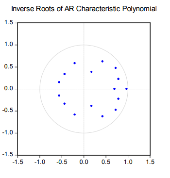

11-05-2025
Del Negro and Schorfheide (2011):
At first glance, VARs appear to be straightforward multivariate generalizations of univariate autoregressive models. At second sight, they turn out to be one of the key empirical tools in modern macroeconomics.
In the 1980s criticized the large-scale macro-econometric models of the time
Proposed VARs as an alternative that allowed one to model macroeconomic data informatively
Reduced Form VARs
Structural VARs
VAR models roadmap
\(y_t=[y_{1,t} y_{2,t} . . . y_{n,t}]'\)
\(y_t=G_0+G_1y_{t-1}+G_2y_{t-2}+...+G_py_{t-p}+e_t\) Reduced Form VAR
\(G_0=(n.1)\) vector of constraints \(G_0=(n.n)\) vector of coefficients \(e_t=(n.1)\) vector of white noise innovations
\(E[e_t]=0\)
\(E[e_t e_{\tau}'= \Omega , if t=\tau \\ 0 otherwise\)
\(y_{1,t}=g_{11}y_{1,t-1}+g_{12}y_{2,t-1}+e_{1,t}\)
\(y_{2,t}=g_{21}y_{1,t-1}+g_{22}y_{2,t-1}+e_{2,t}\)
\(y_t=G_ty_{t-1}+e_t\) where \[y_t=\begin{bmatrix} y_{1,t} \\ y_{2,t} \end{bmatrix}\] \[y_t=\begin{bmatrix} \pi_t \\ gdp_t \end{bmatrix}\]
\[G_t=\begin{bmatrix} g11 & g12 \\ g21 & g22 \\ \end{bmatrix}\]
\[G_t=\begin{bmatrix} e_{1,t} \\ e_{2,t} \end{bmatrix}\], Assumptions about the error terms: \[E[e_te_t']=\begin{bmatrix} 0 & 0\\ 0 & 0 \\ \end{bmatrix}=\Omega, for t\neq\tau\] \[E[e_te_t']=\begin{bmatrix} \sigma_{e1}^2 & \sigma_{e1e2}\\ \sigma_{e1e2} & \sigma_{e2}^2 \\ \end{bmatrix}=\Omega\]
Performed with OLS applied equation by equation
Estimates are:
A p-th order VAR is said to be covariance-stationary if :
\[E[Y_t]=E[Y_{t+j}]=\mu=\begin{bmatrix} \mu_1 \\ \mu_2 \\ \dots \\ \mu_n \end{bmatrix}\] 2. The covariance matrix of \(y_t\) and \(y_{t+j}\) depends on the time lapsed between j and not not the reference period t
\[E[(y_t-\mu)(y_{t+j}-\mu)']=E[(y_s-\mu)(y_{s+j}-\mu)']=\Gamma_j\]
The conditioins for a VAR to be stationary are similar to the conditions for a univariate AR process to be stationary: \(y_t=G_0+G_1y_{t-1}+G_2 y_{t-2}+\dots+G_py_{t-p}+e_t\)
\((I_n-G_1L-G_2L^2-\dots-G_pL^p)y_t=G_0+e_t\)
\(G(L)y_t=G_0+e_t\) For \(y_t\) to be stationary, the matrix polynomial in the lag operator \(G(L)\) must be invertible.
A VAR(p) process is stationary (thus) - A VAR(p) if all the np roots of the characteristic polynomial are (in modulus) outside the unit imaginary
\(det(I_n-G_1L-G_2L^2-\dots-G_pL^p)=0\)
Softwares sometimes inverse roots of the characteristic AR polynomial, which should then lie within the unit imaginary circle.

\(y_t=\mu+\sum_{i=1}^{n} \Psi_i e_{t-i}\)
What number is most appropriate? …
Over-fitting: poor-quality estimates and bad forecasts
Omitted variable bias: poor-quality estimates and bad forecasts
Possible solutions:
The forecast error can be decomposed into the sum of et , the unexpected innovation of yt , and the coefficient estimation error:
\(y_t-E[y_t/Y_{t-1}]=e_t+V(Y_{t-1}])\)
\(Y_t-E[y_t/Y_{t-1}]≅e_t\)
Iterating one period forward: \(E[y_{t+1}/Y_{t-1}]=G_0+G_1E[y_t|y_{t-1}]+G_2y_{t-2}+\dots+G_py_{t-p+1}\)
Iterating j periods forward: \(E[y_{t+j}/Y_{t-1}]=G_0+G_1E[y_{t+j-1}|y_{t-1}]+G_2E[y_{t+j-2}|y_{t-1}+\\\dots+G_py_{t-p+1}\)